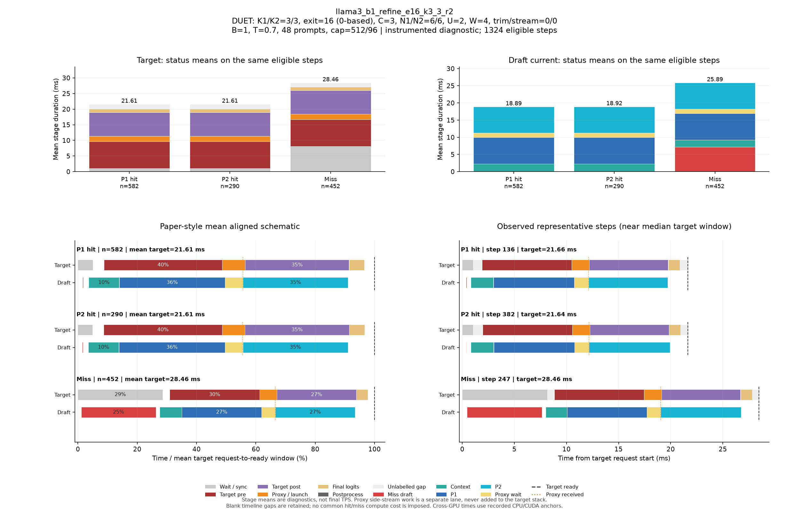

DUET: K1/K2=3/3, exit=16 (0-based), C=3, N1/N2=6/6, U=2, W=4, trim/stream=0/0
| Pass | 용도 | N | B | T | Seed | AL* | Cache hit | TPS* | Raw TPS |
|---|---|---|---|---|---|---|---|---|---|
| 0 | profile-diagnostic | 48 | 1 | 0.7 | 5100 | 2.543 | 65.49% | 85.35 | 85.09 |
Input/output cap: 512/96 · GPUs: 4,5 · draft seed: 0 · source: a3298235676eb40edcdc2f6805b99485ac33e126
PNG · 벡터 PDF · 원본 결과 JSON
세부 trace: 1324 eligible steps. Target 원본 · Draft 원본
제외 수: {"initial": 19, "output_boundary": 43, "capture_or_next": 8}
왼쪽 아래는 상태별 평균 정렬 schematic, 오른쪽 아래는 실제 대표 step입니다. %의 분모는 각 상태의 평균 target request→ready 시간이며 phase overlap은 별도 lane에 표시합니다.

{
"args": {
"target": "/data/chokwans99/models/layerskip-llama3-8B",
"draft": "/home/chokwans99/models_mlsys/Qwama-0.5B-Instruct",
"mode": "duet-tree",
"batches": [
1
],
"temperatures": [
0.7
],
"seeds": [
5100
],
"target_tp": 1,
"prompts": "/home/chokwans99/PSD-mlsys-coverage/results/mlsys_coverage/round5/tuning48.json",
"limit": 0,
"max_new_tokens": 96,
"max_model_len": 2048,
"input_cap": 512,
"k1": 3,
"k2": 3,
"draft_fan_out": 2,
"proxy_fan_out": 1,
"p1_tree": true,
"p1_verify_nodes": null,
"p2_verify_nodes": null,
"exit_layer": 16,
"p1_nodes": 6,
"p2_nodes": 6,
"tree_width": 3,
"p1_roots": 2,
"p2_budget": null,
"tree_root_count": null,
"tree_beta": 0.5,
"tree_proxy_threshold": 0.01,
"tree_conf_threshold": 0.03,
"root_source": "complement",
"root_normalization": "full",
"root_overlap_mix": 0.25,
"memory_fraction": 0.45,
"ignore_eos": false,
"greedy_only": false,
"audit_preemption": false,
"ragged_limits": false,
"tree_calibration_dir": null,
"preflight_test": null,
"output": "/home/chokwans99/PSD-mlsys-coverage/results/mlsys_coverage/round5/llama3_b1_refine_retry/llama3_b1_refine_e16_k3_3_r2.json"
},
"engine_kwargs": {
"num_gpus": 2,
"max_num_seqs": 1,
"max_model_len": 2048,
"max_num_batched_tokens": 2048,
"gpu_memory_utilization": 0.45,
"speculate": true,
"draft_async": true,
"greedy_only": false,
"jit_speculate": true,
"speculate_k": 6,
"async_fan_out": 3,
"duet_p1_tree_policy": "on",
"duet_p2_tree_policy": "on",
"draft": "/home/chokwans99/models_mlsys/Qwama-0.5B-Instruct",
"duet_enabled": true,
"duet_exit_layer": 16,
"duet_phase1_k": 3,
"duet_phase2_k": 3,
"duet_draft_fan_out": 2,
"duet_p2_tree_max_nodes": 6,
"duet_p2_tree_verify_nodes": 6,
"duet_p1_tree_max_nodes": 6,
"duet_p1_tree_verify_nodes": 6,
"duet_tree_c_tensor": 3,
"duet_p1_roots_per_position": 2,
"duet_p2_budget": null,
"duet_tree_root_count": null,
"duet_tree_beta": 0.5,
"duet_tree_proxy_threshold": 0.01,
"duet_tree_conf_threshold": 0.03,
"duet_root_source": "complement",
"duet_root_normalization": "full",
"duet_root_overlap_mix": 0.25
},
"env": {
"CUDA_VISIBLE_DEVICES": "4,5",
"SSD_CUDA_ARCH": "8.9",
"SSD_ATTN_BACKEND": "auto",
"SSD_DIST_PORT": "29805",
"OMP_NUM_THREADS": "4",
"SSD_SEED": "0",
"SSD_CHAIN_PROXY_GRAPH": "1",
"SSD_FAST_VERIFY": "1",
"SSD_BATCHED_PROXY_GRAPH": "1",
"SSD_DUET_EXIT_REPLICA": "0",
"SSD_ASYNC_PROXY_SEND": "1",
"SSD_PROXY_STREAM": "0",
"SSD_BATCHED_TREE": "1",
"SSD_TREE_EXPANSION_POLICY": "reach_gain_frontier",
"SSD_TREE_REACH_CALIBRATION": "/home/chokwans99/PSD-mlsys-coverage/results/mlsys_coverage/round4/calibration/reach.json",
"SSD_TREE_GAIN_CALIBRATION": "/home/chokwans99/PSD-mlsys-coverage/results/mlsys_coverage/round4/calibration/gain.json",
"SSD_DUET_MISS_K": "4",
"SSD_TREE_FUSED_MATH": "1",
"SSD_BATCH_TREE_BULK_EXPORT": "1",
"SSD_TREE_PARALLEL_INSERT": "0",
"SSD_PROFILE_DUET": "1",
"SSD_PROFILE_DUET_MAX_EVENTS": "100000",
"SSD_TREE_SHAPE_METRICS": "1",
"SSD_PROFILE_DIR": "/home/chokwans99/PSD-mlsys-coverage/results/mlsys_coverage/round5/profiles/llama3_b1_refine_e16_k3_3_r2",
"SSD_HF_CACHE": "/data/chokwans99/models",
"SSD_DATASET_DIR": "/home/chokwans99/PSD-mlsys-coverage/results/mlsys_coverage/round5"
},
"effective_features": {
"fast_verify": true,
"batched_proxy_graph": true,
"exit_replica": false,
"jit_speculate": true,
"duet_jit_short": true,
"miss_depth": 4,
"miss_width": 1,
"tree_fused_math": true,
"tree_parallel_insert": false,
"bulk_export": true
},
"resolved_env": {
"SSD_CUDA_ARCH": "8.9",
"SSD_ATTN_BACKEND": "auto",
"SSD_DIST_PORT": "29805",
"SSD_SEED": "0",
"SSD_CHAIN_PROXY_GRAPH": "1",
"SSD_FAST_VERIFY": "1",
"SSD_BATCHED_PROXY_GRAPH": "1",
"SSD_DUET_EXIT_REPLICA": "0",
"SSD_ASYNC_PROXY_SEND": "1",
"SSD_PROXY_STREAM": "0",
"SSD_BATCHED_TREE": "1",
"SSD_TREE_EXPANSION_POLICY": "reach_gain_frontier",
"SSD_TREE_REACH_CALIBRATION": "/home/chokwans99/PSD-mlsys-coverage/results/mlsys_coverage/round4/calibration/reach.json",
"SSD_TREE_GAIN_CALIBRATION": "/home/chokwans99/PSD-mlsys-coverage/results/mlsys_coverage/round4/calibration/gain.json",
"SSD_DUET_MISS_K": "4",
"SSD_TREE_FUSED_MATH": "1",
"SSD_BATCH_TREE_BULK_EXPORT": "1",
"SSD_TREE_PARALLEL_INSERT": "0",
"SSD_PROFILE_DUET": "1",
"SSD_PROFILE_DUET_MAX_EVENTS": "100000",
"SSD_TREE_SHAPE_METRICS": "1",
"SSD_PROFILE_DIR": "/home/chokwans99/PSD-mlsys-coverage/results/mlsys_coverage/round5/profiles/llama3_b1_refine_e16_k3_3_r2",
"SSD_HF_CACHE": "/data/chokwans99/models",
"SSD_DATASET_DIR": "/home/chokwans99/PSD-mlsys-coverage/results/mlsys_coverage/round5",
"SSD_FORCE_SPLIT_K1K2": "1",
"SSD_DUET_JIT_SHORT": "1",
"SSD_SHM_NAME": "ssd_2445153"
},
"runtime_source_sha256": {
"ssd/ssd/__init__.py": "f1a221b38f55b42ef0619cba48a411acbbd1965c4845b4643f77443b7ce77950",
"ssd/ssd/config.py": "ec9ffe1c84257a2e2ec10c39995340f8941f9f3c400c48c18cfa7c3e4db3b220",
"ssd/ssd/engine/block_manager.py": "05d873619b419d31f47b4be4025bc7c9f11759f5f0bc3f65fbff3a1e8f94660a",
"ssd/ssd/engine/draft_runner.py": "cdf793b4718e576bcc10a638fcff577eef9cf21cc1f38a9fc27c333c3cfe5cee",
"ssd/ssd/engine/helpers/batch_tree_common.py": "739feeb975c20d0adbdae51735b8983aa6cae8b59d6237b285db0c766d558f27",
"ssd/ssd/engine/helpers/batch_tree_draft.py": "f361030685350183884cc55b9058945515bb00da53fc86541f7902bfd2138528",
"ssd/ssd/engine/helpers/batch_tree_forward.py": "0c6079d2bdbf7ecc000b2a98b94b49b1942939d34ada80b15f57510de8a20940",
"ssd/ssd/engine/helpers/batch_tree_inputs.py": "c0a05d13ba0e63ecbc920425ddd6a98dc60001d93d73085e75d2d4a9b110a066",
"ssd/ssd/engine/helpers/batch_tree_roots.py": "ad3c4e772392c1043284ac4912d606543f3fd76167135b73e4f72a700e6820c7",
"ssd/ssd/engine/helpers/batch_tree_sampling.py": "46f36658cb189bc080ae0d4b8561f84662290facacccf6600f129eb6e93ee66b",
"ssd/ssd/engine/helpers/batch_tree_verify.py": "2da945efe3ba4b2673377a2f5c497528ab0c6cf4d7fd7edfbdb23b6c9c619ede",
"ssd/ssd/engine/helpers/batched_proxy.py": "6ed4f9b85ff8cf9c24b7ad43a1b7377d08123eeef5307366a373dacda184da86",
"ssd/ssd/engine/helpers/batched_tree_executor.py": "098d64cad2d20d96091631f6bc91da73b1e893ec400c3431a4ed68d007a9ef45",
"ssd/ssd/engine/helpers/cudagraph_helpers.py": "0436aec61d05d0b79696a48665042e364f3f4c50d853b68dc424e435b54be0c9",
"ssd/ssd/engine/helpers/e0_trace.py": "23ecd9bce2587cbef3f99c8894964c0d9642d33d372bd7be4954a5a2840a142e",
"ssd/ssd/engine/helpers/mask_helpers.py": "8ada4e709a6ab310ee920a7176b3684f89860022fc659442f6cb02ed5fb87d88",
"ssd/ssd/engine/helpers/p1_tree.py": "f48ae6b01e593d2598262b34007a6b58dde9e57e94138dde62f81d5526637398",
"ssd/ssd/engine/helpers/p2_tree.py": "73b0a512d834ab3a4608d9cd898b13b32630dd3b914b49e753c1116ac0640b41",
"ssd/ssd/engine/helpers/p2_tree_executor.py": "cfb04f959fd08baf3819a688a907cac4e3071a2727085ea08ca089b50a21e82e",
"ssd/ssd/engine/helpers/packed_tree_forward.py": "b903d6fe4d1fe18f95f6540f488acf40d469154100239429256eace61b1d7e76",
"ssd/ssd/engine/helpers/packed_verify.py": "a50ff24e93324840783b60102bfaeb3786711f05f64bd897708c779535c1820f",
"ssd/ssd/engine/helpers/root_policy.py": "5e3a8e2f9b2fe43fec52eb9e80fe59cb0d28177122f7e75c823c5ffd20aee718",
"ssd/ssd/engine/helpers/runner_helpers.py": "bfb570d8e018ee296a6c2a8c3c9e75919fd0eb1beb288ceb80121ad116419bf2",
"ssd/ssd/engine/helpers/speculate_types.py": "2929b5f3a176d04b6a4b01f092b224ad733dfda10a647bb73801cd346441ae91",
"ssd/ssd/engine/helpers/tree_expansion_policy.py": "47f818d1b8f284e56813af294723f6a934c3da0502b9ae4e611b54ba6fb85dac",
"ssd/ssd/engine/helpers/tree_fused_math.py": "930a1215363a3b6f878cbc4a71c3f59293f46aa2eab3c4938e5bb51e95868d2e",
"ssd/ssd/engine/helpers/tree_gain_allocation.py": "6f32c6a7b69272c1b42992d95c546bfd3980ccd71af3b3346e9df61977907b6a",
"ssd/ssd/engine/helpers/tree_host_topology.py": "86d0deab4da2932540a108c4c2b3560b8634837e71ba23783375c2001e4cf81c",
"ssd/ssd/engine/helpers/tree_layout.py": "4e5e47c54a4efd5a30ae8c528e1d2d9493d12aa5605c0e65c2f86ba874805be1",
"ssd/ssd/engine/helpers/tree_rerank_gpu.py": "e4a8bff8828f983d6eb407504f87f2a9edf08a1750449fe46565e661f892b734",
"ssd/ssd/engine/helpers/tree_topology_gpu.py": "3a6cf8796faabbe8adef56deedf8956c1cf252a31e0491f3b71a8544bdcf89af",
"ssd/ssd/engine/llm_engine.py": "b0081876ef6470f91fa562acc0317074a85afa9aec8322182bda7749153db00f",
"ssd/ssd/engine/model_runner.py": "5fa9e910f38538c276a151113fc490be9c75ae9af2bf35ba6eaa5513b237a421",
"ssd/ssd/engine/scheduler.py": "52a36e8bb2abc26f775562a39bd95ea6cc8c70650e6193ddaa0fad762afb8ae4",
"ssd/ssd/engine/sequence.py": "6894715ef142074b118bfa3018b10826d2748518e9c8b71291064eb99fae9bd9",
"ssd/ssd/engine/speculator_async.py": "cd16395d5e5d7380d29f5a27e1495b6a40758c0452ce2cb40d996e2c3271c114",
"ssd/ssd/engine/speculator_sync.py": "30487afa7f5027735ebd752ca1a53003f1d56350f503ea91931ef64e7aab115e",
"ssd/ssd/engine/step.py": "525d3022561c9eee96ec076032bb27e281af744feb739ddc17e52344a9cafe8f",
"ssd/ssd/engine/verifier.py": "f6795547f278628312d2dd5ab0a28e9f34489b8e6d02038566a65fa3190a0928",
"ssd/ssd/layers/activation.py": "13d88b460e7610df28c6a7c719dd8bf21c5c59ae0f85c94d505d499215618a82",
"ssd/ssd/layers/attention.py": "bbafa69d9b52dedf81542f2c3227b7f061de11c679a6681a16b0c137ccfc672b",
"ssd/ssd/layers/embed_head.py": "b896a56b908d75c8f30462b0b1a4ce634276ddb41165fdaa0220c55a2ddf7257",
"ssd/ssd/layers/fi_attn.py": "4b0a275d020c1c3ce37f4e2a6c04bff12577d6f11feec7d79959652300fc9a0c",
"ssd/ssd/layers/layernorm.py": "a076c8d2e31d2597119d8504a69afd8711b41a29b5ccb7e1bf111a6c7277400e",
"ssd/ssd/layers/linear.py": "82c096262013516c5f0a43f7c28f23aa6db6b14f52cbe1ce1dacc5f9d5c4b0b6",
"ssd/ssd/layers/rotary_embedding.py": "1bcca21cf5e4d81c11a5c55d59a6033874c4e6a0003cc4ae8e1aa6165976a723",
"ssd/ssd/layers/sampler.py": "df22591a229ae5c2f62d4797707470ebccb8e55f7064577bc24a656ed797f213",
"ssd/ssd/llm.py": "496950f31428f674b70e8e137e029aa16dd82fdc8d8b8cc76f9ebdce86f7f653",
"ssd/ssd/models/eagle3_draft_llama3.py": "0d6e713a419cf884fc85984f9a2a6de520119032075a7c99158e0df7e2faca84",
"ssd/ssd/models/llama3.py": "ac801bd73e999f04a6fc862ca1d49bc94c88315456cfb6cb1215a503bcc5e07d",
"ssd/ssd/models/qwen2.py": "6804e3662a173368632e5f05b9893cc0cd28a61ac9bd25dbe8cd6f387ca0d1ca",
"ssd/ssd/models/qwen3.py": "535495bf69933fd9c677275453b801189e2c3c78a94fcc5133fc65b88c9f69c7",
"ssd/ssd/paths.py": "72c52420daaf6d457c60235617efc3f8b1e3ae208a35f3bc45438adc9d7e01ac",
"ssd/ssd/quant/__init__.py": "a69f0de0a516ba2bf9e13680b75b8f5d538c2eb281b095662ed1515f8b0f8698",
"ssd/ssd/quant/adapter.py": "fbb1ce4a198a585c31b0102555d1f84d18b09b0de1b90a5808d93ec8ff7ac271",
"ssd/ssd/quant/awq_calibrate.py": "116807eca0a3e4e001aa24a3344031416e4060a6c1b2e39f59829fba09484126",
"ssd/ssd/quant/build.py": "37f9c72ac69af213f2720c86faf380b8a46baaad0b98bf5f2e3c7fa9b3fbc43c",
"ssd/ssd/quant/config.py": "080c327b2297d0905f8fddc8d994aa7b9dc1086d7703d951471d48cea8723a1d",
"ssd/ssd/quant/importer.py": "c8990b69bc9e4e152e7e80b7f08f273c6a4652c1f7e95a8247f85e50030f4f92",
"ssd/ssd/quant/init_context.py": "6aa3dc3f6e95d8902fa7244d0010110b6fcf1ffdccedd6eaa389204339fc214f",
"ssd/ssd/quant/io.py": "f44f98a57351ff1063b7423d2f8390a565a30796fd6c3beaeaa8825f906e66b5",
"ssd/ssd/quant/loader.py": "14f901b1f53a3650be7eff497f626469e2b1fbc487202c639d33c8dd4c9047fb",
"ssd/ssd/quant/marlin.py": "4f1996e9f63d7109e92a3a7ec5350069ba67d7659f2149e99b84ca3c6626b241",
"ssd/ssd/quant/marlin_utils.py": "f64ec8d7ec8260556abd21e229567971a928882f14b93d288a6732d55c12fc90",
"ssd/ssd/quant/naming.py": "7ba73900af5e6d6fa2d1907bd2611625fc72f28a1fb9ea4834cd9a45901632d6",
"ssd/ssd/quant/pack.py": "b7dd683b7cdbfbb6f4ce1e13a51a72240a8dc3a35b7ed652dc664d26bb384711",
"ssd/ssd/quant/state.py": "82cb1050a3b1776765df7ad8f6c59c23a86ac8d1d4cc3c974cded7f8e762f806",
"ssd/ssd/sampling_params.py": "7f79868c4ca115bb18e017411a6c5545f354aa858aa0b8076aafb756d0785032",
"ssd/ssd/utils/async_helpers/async_spec_helpers.py": "0d70779098c5051fcba5d3add5ff0b7896139f1b7789babe701a8df6eaa40f24",
"ssd/ssd/utils/async_helpers/duet_policy.py": "1fb3e1ec1c41a9cda5f531f8c732b09145c7d87ea79d74c331b8176f11f22aaf",
"ssd/ssd/utils/async_helpers/nccl_pack.py": "6330e785f3e81acffe25a82061d3098f7834ad3c2d07bb071d79ed9923b18dc1",
"ssd/ssd/utils/async_helpers/tests.py": "6491ced36a2a6f06d8cf411204b1190d2ca0bc700cd0becf79c3f4cd8abcd87e",
"ssd/ssd/utils/context.py": "ce55eb45f00c91412946dd1c96f5c8f972372dd4c8069770c48e120773f301fc",
"ssd/ssd/utils/int8_debug.py": "9a71dbf2b997a9c8d9b776cc3659c8dbf32ce5411eb5cedb4a73368cee60d3d7",
"ssd/ssd/utils/loader.py": "c008eac34810772e8d9f51da896c00867481f3e1a0e6f725e0d06599c0aab59e",
"ssd/ssd/utils/misc.py": "1084b630f174d651b78b01c4ba2dff147f18d3cf52a200704b4b9eab2b72b66c",
"ssd/ssd/utils/quantize.py": "c0ee73d55f3781eba88007325d5e9e53e66ad952e0e8f19143aa8c50bc39f406",
"ssd/ssd/utils/verify.py": "0cf11b9ba19a73e9c39087fccde43071464c6f3b964e00081ebadc747ef142a4",
"ssd/ssd/utils/verify_fast.py": "23b05b7e5032fe72c8f2ef5bd7a69aa874818b08b52ea7fc0344a54c76ea28d9",
"ssd/bench/mlsys_campaign.py": "059b6316ba33e867e1fcf099a8180c186fa70b916692eca386d2a4a347b0f26f",
"ssd/bench/mlsys_coverage.py": "70b2afaf05bbbd5760c2a4f96f801976479209ca1d7a8f9eb8598139e686bdbc",
"ssd/bench/mlsys_greedy_audit.py": "b9815fd03ded7f30f7c0408629782156e73f5ceaab9f0b3b720956f5c00da141",
"ssd/bench/mlsys_preemption_audit.py": "f891ff5a69a59fb8c93e7952f9d48ac16adb7fef074763089f14d4505ecad80d",
"ssd/bench/mlsys_summarize.py": "0235aa2b56eb59c41c429351d77e90e16c52ccdf58c43e3578dd03df0f6095bd",
"ssd/bench/mlsys_tree_observer.py": "8c18248c9ef1953e2e821613099f14d155978540536939288d4fb2aa897c6263",
"ssd/bench/mlsys_verify_bench.py": "3ddc36197874d239f41a1c135570d4d7a0940d615d3d396299bae46e377bce2e"
}
}{
"groups": [
{
"status": "P1 hit",
"n": 582,
"mean_target_ms": 21.605440239726065,
"mean_decode_ms": 21.647987452406063,
"mean_intervals": [
{
"lane": "Draft current",
"label": "Context",
"start": 0.791441354554953,
"end": 2.9926627563037416
},
{
"lane": "Draft current",
"label": "Miss draft",
"start": 0.341514508339138,
"end": 0.3820468781330332
},
{
"lane": "Draft current",
"label": "P1",
"start": 3.014433195091195,
"end": 10.717053965604592
},
{
"lane": "Draft current",
"label": "P2",
"start": 12.014894606321539,
"end": 19.67048518518402
},
{
"lane": "Draft current",
"label": "Proxy wait",
"start": 10.719176572213058,
"end": 12.013096698370996
},
{
"lane": "Target",
"label": "Final logits",
"start": 19.74913919873254,
"end": 20.862292930022956
},
{
"lane": "Target",
"label": "Postprocess",
"start": 21.58645596250226,
"end": 21.605440239726065
},
{
"lane": "Target",
"label": "Proxy / launch",
"start": 10.506249494978652,
"end": 12.172776886278001
},
{
"lane": "Target",
"label": "Target post",
"start": 12.174662050512648,
"end": 19.747312766579828
},
{
"lane": "Target",
"label": "Target pre",
"start": 1.9093676219691116,
"end": 10.50438447711394
},
{
"lane": "Target",
"label": "Wait / sync",
"start": 0.0,
"end": 1.086699234660958
}
],
"components": [
{
"lane": "Draft current",
"label": "Context",
"mean_ms": 2.2012214017487883,
"present_steps": 582,
"population": 582
},
{
"lane": "Draft current",
"label": "Miss draft",
"mean_ms": 0.040532369793895184,
"present_steps": 582,
"population": 582
},
{
"lane": "Draft current",
"label": "P1",
"mean_ms": 7.702620770513397,
"present_steps": 582,
"population": 582
},
{
"lane": "Draft current",
"label": "P2",
"mean_ms": 7.655590578862482,
"present_steps": 582,
"population": 582
},
{
"lane": "Draft current",
"label": "Proxy wait",
"mean_ms": 1.2939201261579376,
"present_steps": 582,
"population": 582
},
{
"lane": "Target",
"label": "Final logits",
"mean_ms": 1.1131537312904174,
"present_steps": 582,
"population": 582
},
{
"lane": "Target",
"label": "Postprocess",
"mean_ms": 0.018984277223803334,
"present_steps": 582,
"population": 582
},
{
"lane": "Target",
"label": "Proxy / launch",
"mean_ms": 1.6665273912993492,
"present_steps": 582,
"population": 582
},
{
"lane": "Target",
"label": "Target post",
"mean_ms": 7.57265071606718,
"present_steps": 582,
"population": 582
},
{
"lane": "Target",
"label": "Target pre",
"mean_ms": 8.595016855144829,
"present_steps": 582,
"population": 582
},
{
"lane": "Target",
"label": "Unlabelled gap",
"mean_ms": 1.5524080340395268,
"present_steps": 582,
"population": 582
},
{
"lane": "Target",
"label": "Wait / sync",
"mean_ms": 1.086699234660958,
"present_steps": 582,
"population": 582
}
],
"mean_markers": {
"Final logits": 20.862292930022956,
"Target ready": 21.605440239726065,
"Proxy received": 12.01153118585803
},
"representative": {
"step_id": 136,
"status": "P1 hit",
"target_ms": 21.65625,
"decode_ms": 21.69727603904903,
"source_counts": {
"1": 1
},
"physical_queries": 7,
"max_valid_nodes": 6,
"unlabelled_target_ms": 1.632812261581421,
"intervals": [
{
"label": "Wait / sync",
"start": 0.0,
"end": 1.035156011581421,
"lane": "Target",
"original_label": "target_spec_wait"
},
{
"label": "Target pre",
"start": 1.895508050918579,
"end": 10.5,
"lane": "Target",
"original_label": "batch_target_pre"
},
{
"label": "Proxy / launch",
"start": 10.501953125,
"end": 12.170897960662842,
"lane": "Target",
"original_label": "batch_target_proxy"
},
{
"label": "Target post",
"start": 12.172851085662842,
"end": 19.75585913658142,
"lane": "Target",
"original_label": "batch_target_post"
},
{
"label": "Final logits",
"start": 19.757812023162842,
"end": 20.87109398841858,
"lane": "Target",
"original_label": "batch_target_final_logits"
},
{
"label": "Postprocess",
"start": 21.63769507408142,
"end": 21.65625,
"lane": "Target",
"original_label": "target_postprocess"
},
{
"label": "Unlabelled gap",
"start": 1.035156011581421,
"end": 1.895508050918579,
"lane": "Target",
"original_label": "derived_gap"
},
{
"label": "Unlabelled gap",
"start": 10.5,
"end": 10.501953125,
"lane": "Target",
"original_label": "derived_gap"
},
{
"label": "Unlabelled gap",
"start": 12.170897960662842,
"end": 12.172851085662842,
"lane": "Target",
"original_label": "derived_gap"
},
{
"label": "Unlabelled gap",
"start": 19.75585913658142,
"end": 19.757812023162842,
"lane": "Target",
"original_label": "derived_gap"
},
{
"label": "Unlabelled gap",
"start": 20.87109398841858,
"end": 21.63769507408142,
"lane": "Target",
"original_label": "derived_gap"
},
{
"label": "Miss draft",
"start": 0.3705000877380371,
"end": 0.4095621109008789,
"lane": "Draft current",
"original_label": "batch_miss_draft"
},
{
"label": "Context",
"start": 0.8236250877380371,
"end": 2.978898048400879,
"lane": "Draft current",
"original_label": "batch_glue"
},
{
"label": "P1",
"start": 3.001358985900879,
"end": 10.736711025238037,
"lane": "Draft current",
"original_label": "batch_p1_total"
},
{
"label": "Proxy wait",
"start": 10.738664150238037,
"end": 12.116594076156616,
"lane": "Draft current",
"original_label": "batch_proxy_wait"
},
{
"label": "P2",
"start": 12.118546962738037,
"end": 19.723039150238037,
"lane": "Draft current",
"original_label": "batch_p2_total"
}
],
"previous": [],
"markers": {
"Target ready": 21.65625,
"Final logits": 20.87109398841858,
"Proxy received": 12.115617036819458
}
},
"step_ids": [
21,
23,
24,
32,
35,
36,
38,
42,
44,
46,
52,
54,
58,
59,
61,
62,
63,
64,
69,
70,
72,
74,
75,
76,
80,
81,
83,
85,
87,
88,
90,
91,
94,
96,
97,
101,
102,
103,
104,
105,
106,
108,
109,
112,
114,
115,
116,
121,
122,
123,
124,
125,
126,
127,
130,
132,
133,
136,
137,
140,
142,
146,
148,
149,
150,
159,
161,
164,
166,
168,
170,
171,
172,
174,
176,
177,
178,
179,
180,
181,
182,
189,
190,
193,
195,
197,
198,
199,
200,
202,
203,
205,
206,
207,
208,
209,
211,
213,
214,
215,
216,
217,
218,
219,
220,
221,
225,
226,
230,
231,
234,
236,
237,
239,
240,
241,
245,
246,
248,
249,
250,
251,
253,
255,
260,
261,
262,
263,
264,
265,
266,
272,
274,
276,
277,
279,
280,
283,
287,
288,
291,
295,
296,
297,
302,
303,
304,
306,
307,
310,
312,
313,
314,
325,
329,
333,
335,
336,
341,
344,
348,
351,
353,
354,
357,
360,
362,
364,
366,
367,
370,
372,
374,
376,
377,
384,
387,
391,
392,
394,
396,
398,
399,
401,
403,
404,
406,
407,
408,
409,
412,
413,
418,
419,
429,
433,
434,
437,
438,
439,
440,
442,
443,
449,
457,
460,
462,
466,
469,
470,
472,
477,
478,
479,
480,
481,
482,
483,
484,
485,
486,
487,
488,
493,
494,
496,
497,
499,
505,
506,
508,
511,
513,
514,
515,
520,
549,
554,
556,
557,
561,
562,
565,
566,
567,
578,
579,
581,
584,
586,
595,
600,
601,
615,
616,
617,
618,
621,
622,
623,
624,
625,
626,
632,
636,
638,
642,
649,
654,
655,
657,
658,
660,
661,
662,
665,
667,
668,
669,
673,
679,
681,
682,
683,
684,
685,
686,
689,
691,
692,
696,
698,
699,
701,
703,
704,
711,
714,
716,
717,
718,
719,
720,
723,
724,
726,
727,
733,
736,
739,
744,
747,
756,
757,
761,
765,
768,
770,
775,
777,
780,
782,
787,
788,
790,
791,
795,
796,
797,
800,
808,
810,
814,
816,
817,
821,
822,
826,
830,
831,
833,
835,
840,
853,
859,
860,
862,
876,
882,
885,
888,
891,
896,
898,
900,
901,
902,
903,
905,
906,
907,
908,
912,
914,
919,
922,
925,
927,
929,
930,
931,
936,
937,
939,
940,
941,
942,
943,
947,
948,
949,
952,
954,
955,
958,
959,
960,
961,
962,
963,
964,
965,
966,
967,
968,
969,
970,
979,
985,
993,
994,
996,
999,
1000,
1001,
1007,
1009,
1014,
1015,
1016,
1024,
1027,
1029,
1031,
1032,
1034,
1036,
1037,
1038,
1040,
1042,
1043,
1044,
1045,
1047,
1048,
1050,
1051,
1052,
1055,
1056,
1067,
1072,
1074,
1079,
1082,
1084,
1085,
1087,
1088,
1092,
1099,
1115,
1122,
1123,
1126,
1128,
1132,
1133,
1145,
1146,
1150,
1151,
1156,
1159,
1162,
1166,
1168,
1170,
1172,
1173,
1180,
1181,
1182,
1185,
1186,
1188,
1194,
1196,
1206,
1207,
1208,
1210,
1211,
1213,
1214,
1217,
1220,
1223,
1224,
1226,
1227,
1228,
1232,
1234,
1238,
1239,
1241,
1242,
1243,
1244,
1245,
1246,
1247,
1248,
1249,
1250,
1251,
1253,
1257,
1258,
1263,
1267,
1268,
1271,
1275,
1276,
1278,
1279,
1280,
1281,
1287,
1289,
1290,
1294,
1296,
1301,
1302,
1303,
1304,
1305,
1306,
1307,
1308,
1309,
1310,
1312,
1316,
1317,
1318,
1319,
1322,
1323,
1324,
1325,
1326,
1327,
1330,
1333,
1336,
1337,
1339,
1340,
1341,
1342,
1343,
1345,
1347,
1348,
1355,
1357,
1360,
1361,
1362,
1363,
1365,
1366,
1367,
1368,
1371,
1372,
1373,
1374,
1375,
1376,
1377,
1378,
1379,
1380,
1381,
1382,
1383,
1384,
1385,
1386,
1387,
1388,
1389,
1390,
1391,
1392,
1393
],
"query_shapes": {
"7": 524,
"4": 58
}
},
{
"status": "P2 hit",
"n": 290,
"mean_target_ms": 21.611414060921504,
"mean_decode_ms": 21.654314941983543,
"mean_intervals": [
{
"lane": "Draft current",
"label": "Context",
"start": 0.7653648080496952,
"end": 2.967902165445788
},
{
"lane": "Draft current",
"label": "Miss draft",
"start": 0.31833655012064965,
"end": 0.3585557904736749
},
{
"lane": "Draft current",
"label": "P1",
"start": 2.9898259828830587,
"end": 10.711517458948595
},
{
"lane": "Draft current",
"label": "P2",
"start": 12.011744762289114,
"end": 19.671254467142038
},
{
"lane": "Draft current",
"label": "Proxy wait",
"start": 10.71354467046672,
"end": 12.009980235428646
},
{
"lane": "Target",
"label": "Final logits",
"start": 19.76118840431345,
"end": 20.874661580447494
},
{
"lane": "Target",
"label": "Postprocess",
"start": 21.592712853694785,
"end": 21.611414060921504
},
{
"lane": "Target",
"label": "Proxy / launch",
"start": 10.50123757493907,
"end": 12.171228486916114
},
{
"lane": "Target",
"label": "Target post",
"start": 12.172922310335883,
"end": 19.759363207323798
},
{
"lane": "Target",
"label": "Target pre",
"start": 1.8900778227838977,
"end": 10.499205334433194
},
{
"lane": "Target",
"label": "Wait / sync",
"start": 0.0,
"end": 1.0651771479639514
}
],
"components": [
{
"lane": "Draft current",
"label": "Context",
"mean_ms": 2.2025373573960927,
"present_steps": 290,
"population": 290
},
{
"lane": "Draft current",
"label": "Miss draft",
"mean_ms": 0.04021924035302524,
"present_steps": 290,
"population": 290
},
{
"lane": "Draft current",
"label": "P1",
"mean_ms": 7.721691476065537,
"present_steps": 290,
"population": 290
},
{
"lane": "Draft current",
"label": "P2",
"mean_ms": 7.659509704852926,
"present_steps": 290,
"population": 290
},
{
"lane": "Draft current",
"label": "Proxy wait",
"mean_ms": 1.2964355649619268,
"present_steps": 290,
"population": 290
},
{
"lane": "Target",
"label": "Final logits",
"mean_ms": 1.1134731761340437,
"present_steps": 290,
"population": 290
},
{
"lane": "Target",
"label": "Postprocess",
"mean_ms": 0.01870120722672035,
"present_steps": 290,
"population": 290
},
{
"lane": "Target",
"label": "Proxy / launch",
"mean_ms": 1.6699909119770444,
"present_steps": 290,
"population": 290
},
{
"lane": "Target",
"label": "Target post",
"mean_ms": 7.586440896987915,
"present_steps": 290,
"population": 290
},
{
"lane": "Target",
"label": "Target pre",
"mean_ms": 8.609127511649296,
"present_steps": 290,
"population": 290
},
{
"lane": "Target",
"label": "Unlabelled gap",
"mean_ms": 1.5485032089825335,
"present_steps": 290,
"population": 290
},
{
"lane": "Target",
"label": "Wait / sync",
"mean_ms": 1.0651771479639514,
"present_steps": 290,
"population": 290
}
],
"mean_markers": {
"Final logits": 20.874661580447494,
"Target ready": 21.611414060921504,
"Proxy received": 12.008466552043783
},
"representative": {
"step_id": 382,
"status": "P2 hit",
"target_ms": 21.63769507408142,
"decode_ms": 21.682142047211528,
"source_counts": {
"2": 1
},
"physical_queries": 7,
"max_valid_nodes": 6,
"unlabelled_target_ms": 1.5869145393371582,
"intervals": [
{
"label": "Wait / sync",
"start": 0.0,
"end": 1.0498039722442627,
"lane": "Target",
"original_label": "target_spec_wait"
},
{
"label": "Target pre",
"start": 1.955078125,
"end": 10.565428972244263,
"lane": "Target",
"original_label": "batch_target_pre"
},
{
"label": "Proxy / launch",
"start": 10.567382097244263,
"end": 12.238281011581421,
"lane": "Target",
"original_label": "batch_target_proxy"
},
{
"label": "Target post",
"start": 12.240234136581421,
"end": 19.828125,
"lane": "Target",
"original_label": "batch_target_post"
},
{
"label": "Final logits",
"start": 19.830078125,
"end": 20.94335913658142,
"lane": "Target",
"original_label": "batch_target_final_logits"
},
{
"label": "Postprocess",
"start": 21.619140148162842,
"end": 21.63769507408142,
"lane": "Target",
"original_label": "target_postprocess"
},
{
"label": "Unlabelled gap",
"start": 1.0498039722442627,
"end": 1.955078125,
"lane": "Target",
"original_label": "derived_gap"
},
{
"label": "Unlabelled gap",
"start": 10.565428972244263,
"end": 10.567382097244263,
"lane": "Target",
"original_label": "derived_gap"
},
{
"label": "Unlabelled gap",
"start": 12.238281011581421,
"end": 12.240234136581421,
"lane": "Target",
"original_label": "derived_gap"
},
{
"label": "Unlabelled gap",
"start": 19.828125,
"end": 19.830078125,
"lane": "Target",
"original_label": "derived_gap"
},
{
"label": "Unlabelled gap",
"start": 20.94335913658142,
"end": 21.619140148162842,
"lane": "Target",
"original_label": "derived_gap"
},
{
"label": "Miss draft",
"start": 0.3538980484008789,
"end": 0.3958899974822998,
"lane": "Draft current",
"original_label": "batch_miss_draft"
},
{
"label": "Context",
"start": 0.8216722011566162,
"end": 3.003312110900879,
"lane": "Draft current",
"original_label": "batch_glue"
},
{
"label": "P1",
"start": 3.024797201156616,
"end": 10.763077974319458,
"lane": "Draft current",
"original_label": "batch_p1_total"
},
{
"label": "Proxy wait",
"start": 10.766008138656616,
"end": 12.142961025238037,
"lane": "Draft current",
"original_label": "batch_proxy_wait"
},
{
"label": "P2",
"start": 12.144914150238037,
"end": 19.919327974319458,
"lane": "Draft current",
"original_label": "batch_p2_total"
}
],
"previous": [],
"markers": {
"Target ready": 21.63769507408142,
"Final logits": 20.94335913658142,
"Proxy received": 12.141008138656616
}
},
"step_ids": [
20,
25,
26,
29,
31,
41,
43,
48,
50,
55,
57,
60,
67,
68,
71,
73,
79,
89,
92,
95,
99,
100,
107,
117,
128,
129,
138,
141,
143,
152,
153,
155,
156,
157,
169,
173,
175,
186,
191,
194,
212,
227,
228,
229,
232,
235,
238,
244,
254,
269,
270,
271,
273,
275,
284,
286,
301,
305,
308,
315,
316,
317,
318,
320,
323,
332,
334,
337,
343,
355,
368,
369,
381,
382,
385,
386,
388,
389,
390,
411,
416,
417,
420,
422,
423,
427,
428,
432,
435,
446,
454,
459,
471,
491,
495,
516,
517,
522,
523,
539,
540,
550,
552,
558,
560,
563,
564,
573,
577,
591,
593,
598,
602,
603,
606,
607,
613,
614,
627,
634,
635,
637,
640,
646,
648,
652,
653,
666,
674,
677,
680,
690,
695,
702,
705,
707,
708,
715,
725,
730,
731,
734,
738,
741,
749,
751,
760,
762,
767,
771,
774,
776,
783,
784,
789,
798,
807,
815,
818,
819,
824,
825,
827,
829,
832,
836,
837,
839,
854,
855,
856,
861,
866,
868,
869,
870,
871,
872,
875,
877,
881,
884,
886,
895,
904,
909,
911,
913,
918,
920,
921,
924,
926,
928,
932,
933,
935,
944,
945,
956,
957,
971,
974,
978,
981,
987,
990,
992,
1005,
1011,
1013,
1021,
1022,
1023,
1025,
1028,
1033,
1046,
1049,
1058,
1061,
1070,
1071,
1076,
1081,
1086,
1089,
1090,
1091,
1097,
1101,
1102,
1103,
1104,
1105,
1106,
1108,
1109,
1111,
1112,
1113,
1117,
1118,
1119,
1124,
1130,
1131,
1137,
1140,
1141,
1143,
1144,
1147,
1158,
1161,
1175,
1178,
1179,
1187,
1190,
1192,
1199,
1202,
1229,
1230,
1237,
1240,
1252,
1260,
1262,
1264,
1265,
1272,
1285,
1292,
1295,
1297,
1298,
1313,
1314,
1321,
1328,
1331,
1332,
1338,
1344,
1351,
1354,
1358,
1364
],
"query_shapes": {
"7": 278,
"4": 12
}
},
{
"status": "Miss",
"n": 452,
"mean_target_ms": 28.46395899289477,
"mean_decode_ms": 28.51084266548185,
"mean_intervals": [
{
"lane": "Draft current",
"label": "Context",
"start": 7.852515826710557,
"end": 9.965536747886016
},
{
"lane": "Draft current",
"label": "Miss draft",
"start": 0.31963785506982717,
"end": 7.47232296245288
},
{
"lane": "Draft current",
"label": "P1",
"start": 9.967614088965728,
"end": 17.62365453485894
},
{
"lane": "Draft current",
"label": "P2",
"start": 18.944537381682775,
"end": 26.59500795075324
},
{
"lane": "Draft current",
"label": "Proxy wait",
"start": 17.625809640483517,
"end": 18.942826242046017
},
{
"lane": "Target",
"label": "Final logits",
"start": 26.702279141518922,
"end": 27.815844506816525
},
{
"lane": "Target",
"label": "Postprocess",
"start": 28.445531774411158,
"end": 28.46395899289477
},
{
"lane": "Target",
"label": "Proxy / launch",
"start": 17.427777576763017,
"end": 19.10112932087046
},
{
"lane": "Target",
"label": "Target post",
"start": 19.10291606135073,
"end": 26.700367092558768
},
{
"lane": "Target",
"label": "Target pre",
"start": 8.804378537477644,
"end": 17.42592384751919
},
{
"lane": "Target",
"label": "Wait / sync",
"start": 0.0,
"end": 8.115439629660244
}
],
"components": [
{
"lane": "Draft current",
"label": "Context",
"mean_ms": 2.1130209211754587,
"present_steps": 452,
"population": 452
},
{
"lane": "Draft current",
"label": "Miss draft",
"mean_ms": 7.152685107383053,
"present_steps": 452,
"population": 452
},
{
"lane": "Draft current",
"label": "P1",
"mean_ms": 7.656040445893212,
"present_steps": 452,
"population": 452
},
{
"lane": "Draft current",
"label": "P2",
"mean_ms": 7.650470569070461,
"present_steps": 452,
"population": 452
},
{
"lane": "Draft current",
"label": "Proxy wait",
"mean_ms": 1.3170166015625,
"present_steps": 452,
"population": 452
},
{
"lane": "Target",
"label": "Final logits",
"mean_ms": 1.1135653652976045,
"present_steps": 452,
"population": 452
},
{
"lane": "Target",
"label": "Postprocess",
"mean_ms": 0.0184272184836126,
"present_steps": 452,
"population": 452
},
{
"lane": "Target",
"label": "Proxy / launch",
"mean_ms": 1.6733517441074406,
"present_steps": 452,
"population": 452
},
{
"lane": "Target",
"label": "Target post",
"mean_ms": 7.597451031208038,
"present_steps": 452,
"population": 452
},
{
"lane": "Target",
"label": "Target pre",
"mean_ms": 8.621545310041546,
"present_steps": 452,
"population": 452
},
{
"lane": "Target",
"label": "Unlabelled gap",
"mean_ms": 1.3241786940962867,
"present_steps": 452,
"population": 452
},
{
"lane": "Target",
"label": "Wait / sync",
"mean_ms": 8.115439629660244,
"present_steps": 452,
"population": 452
}
],
"mean_markers": {
"Final logits": 27.815844506816525,
"Target ready": 28.46395899289477,
"Proxy received": 18.94130739490543
},
"representative": {
"step_id": 247,
"status": "Miss",
"target_ms": 28.462890148162842,
"decode_ms": 28.501217951998115,
"source_counts": {
"0": 1
},
"physical_queries": 7,
"max_valid_nodes": 4,
"unlabelled_target_ms": 1.301758050918579,
"intervals": [
{
"label": "Wait / sync",
"start": 0.0,
"end": 8.177734136581421,
"lane": "Target",
"original_label": "target_spec_wait"
},
{
"label": "Target pre",
"start": 8.8388671875,
"end": 17.44433617591858,
"lane": "Target",
"original_label": "batch_target_pre"
},
{
"label": "Proxy / launch",
"start": 17.445312023162842,
"end": 19.11425805091858,
"lane": "Target",
"original_label": "batch_target_proxy"
},
{
"label": "Target post",
"start": 19.11621117591858,
"end": 26.6962890625,
"lane": "Target",
"original_label": "batch_target_post"
},
{
"label": "Final logits",
"start": 26.69921898841858,
"end": 27.811522960662842,
"lane": "Target",
"original_label": "batch_target_final_logits"
},
{
"label": "Postprocess",
"start": 28.4462890625,
"end": 28.462890148162842,
"lane": "Target",
"original_label": "target_postprocess"
},
{
"label": "Unlabelled gap",
"start": 8.177734136581421,
"end": 8.8388671875,
"lane": "Target",
"original_label": "derived_gap"
},
{
"label": "Unlabelled gap",
"start": 17.44433617591858,
"end": 17.445312023162842,
"lane": "Target",
"original_label": "derived_gap"
},
{
"label": "Unlabelled gap",
"start": 19.11425805091858,
"end": 19.11621117591858,
"lane": "Target",
"original_label": "derived_gap"
},
{
"label": "Unlabelled gap",
"start": 26.6962890625,
"end": 26.69921898841858,
"lane": "Target",
"original_label": "derived_gap"
},
{
"label": "Unlabelled gap",
"start": 27.811522960662842,
"end": 28.4462890625,
"lane": "Target",
"original_label": "derived_gap"
},
{
"label": "Miss draft",
"start": 0.4554610252380371,
"end": 7.640031099319458,
"lane": "Draft current",
"original_label": "batch_miss_draft"
},
{
"label": "Context",
"start": 8.004289150238037,
"end": 10.061906099319458,
"lane": "Draft current",
"original_label": "batch_glue"
},
{
"label": "P1",
"start": 10.063858985900879,
"end": 17.70448398590088,
"lane": "Draft current",
"original_label": "batch_p1_total"
},
{
"label": "Proxy wait",
"start": 17.707414150238037,
"end": 19.044327974319458,
"lane": "Draft current",
"original_label": "batch_proxy_wait"
},
{
"label": "P2",
"start": 19.046281099319458,
"end": 26.732805013656616,
"lane": "Draft current",
"original_label": "batch_p2_total"
}
],
"previous": [],
"markers": {
"Target ready": 28.462890148162842,
"Final logits": 27.811522960662842,
"Proxy received": 19.042375087738037
}
},
"step_ids": [
22,
27,
28,
30,
33,
34,
37,
40,
45,
47,
49,
51,
53,
56,
65,
66,
78,
82,
84,
86,
93,
98,
111,
113,
118,
119,
120,
131,
134,
135,
139,
145,
147,
151,
154,
158,
160,
162,
163,
165,
167,
184,
185,
187,
188,
192,
196,
201,
204,
210,
223,
224,
233,
242,
243,
247,
252,
256,
258,
259,
267,
268,
278,
281,
282,
285,
289,
290,
292,
293,
294,
299,
300,
309,
311,
319,
321,
322,
324,
326,
327,
328,
330,
331,
339,
340,
342,
345,
346,
347,
349,
350,
352,
356,
358,
359,
361,
363,
365,
371,
373,
375,
378,
380,
383,
393,
395,
397,
400,
402,
405,
410,
415,
421,
424,
425,
426,
430,
431,
436,
441,
444,
445,
447,
448,
450,
452,
453,
455,
456,
458,
461,
463,
464,
465,
467,
468,
473,
474,
475,
476,
490,
492,
498,
500,
501,
502,
503,
504,
507,
509,
510,
512,
518,
519,
521,
524,
526,
527,
528,
529,
530,
531,
532,
533,
534,
535,
536,
537,
538,
541,
542,
543,
544,
545,
546,
547,
548,
551,
553,
555,
559,
571,
572,
574,
575,
576,
580,
582,
583,
585,
587,
588,
589,
590,
592,
594,
596,
597,
599,
608,
609,
619,
620,
630,
631,
633,
639,
641,
643,
644,
645,
647,
650,
651,
656,
659,
663,
664,
671,
672,
675,
676,
678,
687,
688,
693,
694,
697,
700,
706,
709,
710,
713,
721,
722,
728,
729,
732,
735,
737,
740,
742,
743,
745,
746,
748,
750,
754,
755,
758,
759,
764,
766,
769,
772,
773,
778,
779,
781,
785,
786,
792,
793,
794,
799,
801,
803,
804,
805,
806,
809,
811,
812,
813,
820,
823,
828,
834,
838,
841,
842,
845,
850,
851,
852,
857,
858,
863,
864,
865,
867,
873,
874,
878,
879,
880,
883,
887,
889,
890,
892,
893,
894,
897,
899,
910,
916,
917,
923,
934,
938,
946,
951,
953,
972,
973,
975,
976,
977,
980,
983,
984,
986,
988,
989,
991,
995,
997,
998,
1002,
1003,
1004,
1006,
1008,
1010,
1012,
1018,
1019,
1020,
1026,
1030,
1035,
1039,
1041,
1054,
1057,
1059,
1060,
1062,
1063,
1064,
1065,
1066,
1068,
1069,
1073,
1075,
1077,
1078,
1080,
1083,
1093,
1096,
1098,
1100,
1107,
1110,
1114,
1116,
1120,
1121,
1125,
1127,
1129,
1135,
1136,
1138,
1139,
1142,
1148,
1149,
1152,
1153,
1154,
1155,
1157,
1160,
1163,
1164,
1165,
1167,
1169,
1171,
1174,
1177,
1183,
1184,
1189,
1191,
1193,
1195,
1197,
1198,
1200,
1201,
1203,
1204,
1205,
1209,
1212,
1215,
1216,
1218,
1219,
1222,
1225,
1231,
1233,
1235,
1236,
1255,
1256,
1259,
1261,
1266,
1269,
1270,
1273,
1274,
1277,
1282,
1283,
1284,
1286,
1288,
1291,
1293,
1300,
1311,
1315,
1320,
1329,
1335,
1346,
1349,
1350,
1352,
1353,
1356,
1359,
1370
],
"query_shapes": {
"7": 452
}
}
],
"excluded": {
"initial": 19,
"output_boundary": 43,
"capture_or_next": 8
},
"eligible_steps": 1324,
"trace_paths": [
"profiles/llama3_b1_refine_e16_k3_3_r2/duet_profile_target_rank0_020410.json",
"profiles/llama3_b1_refine_e16_k3_3_r2/duet_profile_draft_020410.json"
],
"labelled_capture_count": 5,
"max_target_stage_overlap_ms": 0.0,
"detail_labels_present": false
}